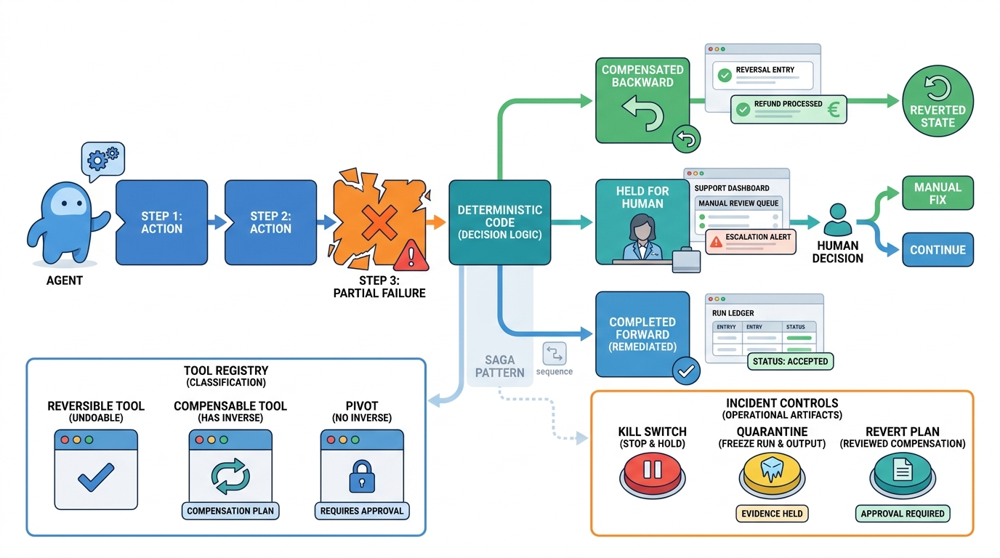

Part VI — RELIABILITY: Long-Running Work and Recovery
Partial Failure, Recovery and Compensating Actions
AI-assisted: written with Claude Code, images generated with the Gemini API. How this works

Image generated by Google Gemini (gemini-3-pro-image-preview)